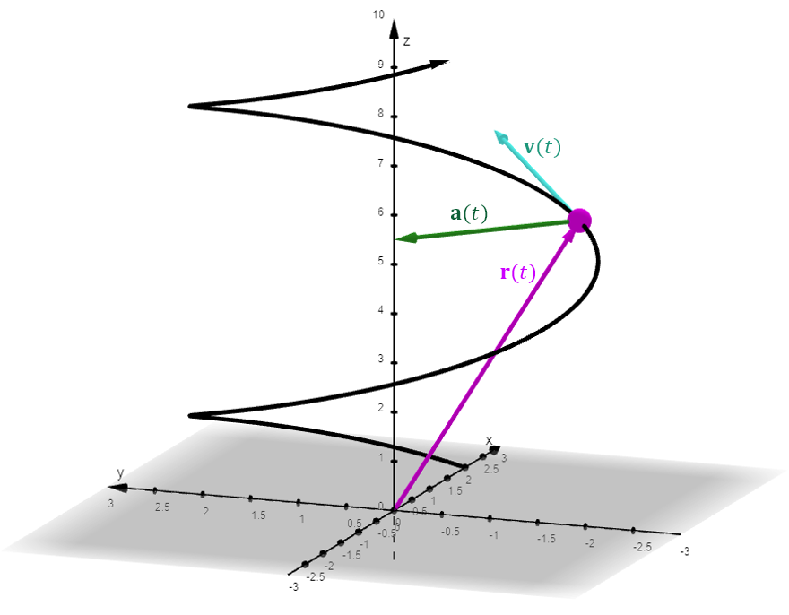

Lesson 7: Motion Along a Curve
I made an application in GeoGebra to visualize a vector-valued function and its derivative: open the GeoGebra app.
- The position of a particle as a function of time \(t\) is given by the vector-valued function \(\mathbf{r}(t)\). The particle travels along the curve \(C\) traced out by this function. Encoded into this function is more than just the curve itself. It also describes how quickly the particle moves along the curve, and in what direction.
- The derivative \(\mathbf{r}'(t)\) produces a vector tangent to the curve. That should make sense, since it results from the limit definition of the derivative.
- Since \(\mathbf{r}'(t)\) measures the instantaneous rate of change of position with respect to time, it also gives the velocity \(\mathbf{v}(t)\) of the particle.
- Since speed is the magnitude of velocity, the speed of the particle is \(\|\mathbf{r}'(t)\|\), which is the same as \(\|\mathbf{v}(t)\|\). We use \(v\) to denote speed.
- Since acceleration is the derivative of velocity with respect to time, the acceleration of the particle is \(\mathbf{r}''(t)\). We use \(\mathbf{a}(t)\) for the acceleration vector.

| Quantity | Formula |
|---|---|
| Position | \(\mathbf{r}(t)\) |
| Velocity | \(\mathbf{v}(t) = \mathbf{r}'(t) = \dfrac{d\mathbf{r}}{dt}\) |
| Speed | \(v = \|\mathbf{v}(t)\| = \|\mathbf{r}'(t)\|\) |
| Acceleration | \(\mathbf{a}(t) = \mathbf{v}'(t) = \mathbf{r}''(t)\) |
| Magnitude of acceleration | \(\|\mathbf{a}(t)\| = \|\mathbf{r}''(t)\|\) |
An Example
The function \(\mathbf{r}(t)\) below traces out the position of a particle over time, \(t\). Find the speed of the particle.
\[ \mathbf{r}(t) = 2t\,\mathbf{i} + 10t\,\mathbf{j} + 11t\,\mathbf{k} \]
Speed is the magnitude of velocity, so speed is the magnitude of the first derivative.
\[ \mathbf{v}(t) = \mathbf{r}'(t) = 2\mathbf{i} + 10\mathbf{j} + 11\mathbf{k} \]
\[
\begin{aligned}
v &= \|\mathbf{v}(t)\| \\
&= \sqrt{2^2 + 10^2 + 11^2} \\
&= \sqrt{225} \\
&= 15
\end{aligned}
\]
An Example
The function \(\vec{r}(t)\) below traces out the position of a particle over time, \(t\). Find the acceleration vector.
\[ \vec{r}(t) = \langle t^4,\ e^t,\ 8t \rangle \]
Differentiate once to find the velocity, and then again to find the acceleration.
\[ \vec{v}(t) = \frac{d\vec{r}}{dt} = \langle 4t^3,\ e^t,\ 8 \rangle \]
\[ \vec{a}(t) = \frac{d\vec{v}}{dt} = \langle 12t^2,\ e^t,\ 0 \rangle \]